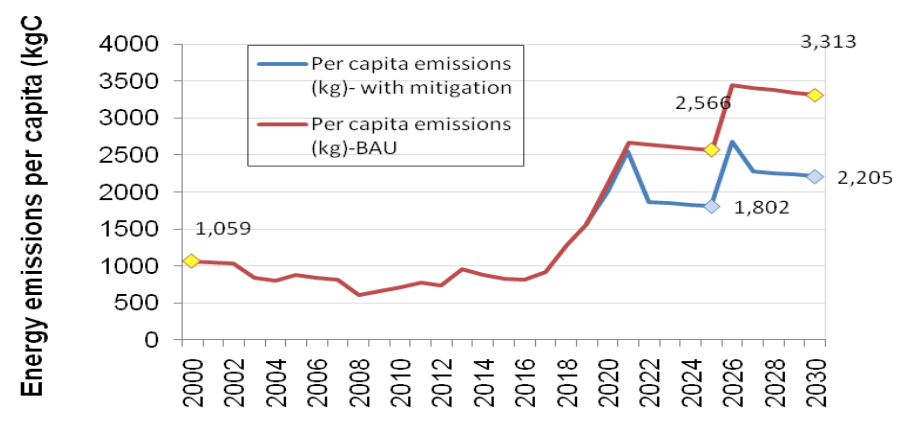
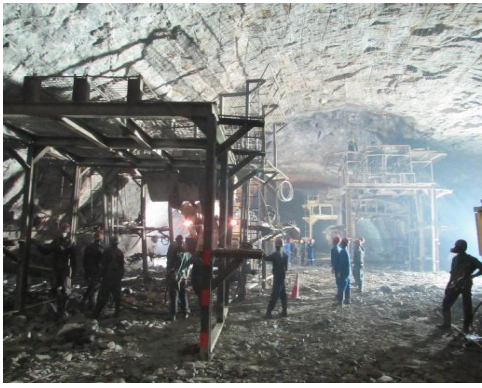
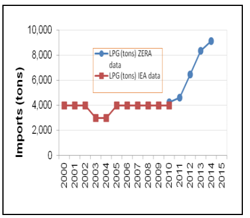

Figure 1: The distribution of Zimbabwe’s emissions by sector (Source: SNC, 2012)
In response to the Warsaw decision and the Lima call for action, the Government of Zimbabwe presents its Intended Nationally Determined Contribution (INDC) to the United Nations Framework Convention on Climate Change (UNFCCC). The Constitution of Zimbabwe (2013) gives every person environmental rights that include the right:
a) to an environment that is not harmful to their health or well-being; and
b) to have the environment protected for the benefit of present and future generations, through reasonable legislative and other measures that—
i. prevent pollution and ecological degradation;
ii. promote conservation; and
iii. secure ecologically sustainable development and use of natural resources while promoting economic and social development.
The Constitution further stipulates that the ‘State must take reasonable legislative and other measures, within the limits of the resources available to it, to achieve the progressive realisation of the rights set out in this section’.
Furthermore, the country’s national economic blueprint, “Zimbabwe Agenda for Sustainable Socio- Economic Transformation (Zim Asset) was crafted to achieve sustainable development and social equity anchored on indigenization, empowerment and employment creation which will be largely propelled by the judicious exploitation of the country’s abundant human and natural resources” - (HE President R.G. Mugabe, 2013). However, the country continues to face multiple environmental management challenges that include pollution, poor waste management, deforestation and land degradation, veldt fires and is susceptible to perennial floods and droughts caused by climatic changes emanating from global warming.
The country therefore seeks to build resilience to climate change whilst ensuring sustainable development in recognition of its climate change vulnerability and national circumstances. In presenting its INDC, Zimbabwe seeks to contribute to an ambitious goal of limiting temperature rise to below 1.5°C. The global climate target is to prevent dangerous anthropogenic interference with the climate system so as to allow ecosystems to adapt naturally to climate change, to ensure that food production is not threatened and to enable economic development to proceed in a sustainable manner.
The country’s location in the Southern subtropics makes it a particularly vulnerable country as rainfall is the key parameter determining its seasons, equivalent to how temperature determines seasons in the extra-tropics. Rainfall is, therefore, the most critical climate component for Zimbabwe as already small changes can affect ecosystems, and all key socio-economic sectors.
Zimbabwe’s economy is founded on sectors vulnerable to climatic changes namely agriculture, forestry, energy, tourism, and industry, among others. The agricultural sector which constitutes between 10 and 15% of Gross Domestic Product (GDP) is largely rain-fed and hence highly sensitive to climate change. The latest census of 2012 estimated the population of Zimbabwe at 13.1million, with the majority (70%) living in rural areas. Approximately, 80% of the rural population’s livelihoods are dependent on rain fed agriculture making them highly vulnerable to climate change induced weather extremes, variability and climate change impacts. This makes climate change adaptation in the agricultural sector a national priority, demanding policy direction at the highest level. At the same time, the agricultural sector also provides opportunities for climate change mitigation through initiatives such as Climate Smart Agriculture (CSA) and sustainable agro-forest-based adaptation and management practices. The sector thus has multiple benefits, and Zimbabwe foresees Greenhouse Gas (GHG) emission reductions whilst improving agricultural productivity and enhancing national food security.
Zimbabwe has a total land area of approximately 390 000km2 of which 45% of the area is under forest cover. Coupled with limited emissions from industry, the high potential sequestration capacity of its forests makes Zimbabwe a net carbon sink. Zimbabwe’s Second National Communication to the UNFCCC identified the energy sector as the major greenhouse gas (GHG) contributor.
The country currently generates about 1200MW of electricity, of which approximately 40% is from thermal sources while about 60% is from hydro power plants particularly for industrial and domestic supply. National total GHG emissions in the year 2000 were 26,996Gg CO2.eq (recalculated in 2015) which translates to 0.002Gg CO2.eq per capita. The distribution of emissions is shown in Figure 1.
Figure 1: The distribution of Zimbabwe’s emissions by sector (Source: SNC, 2012)
The country’s total GHGs emissions contribute less than 0.05% of global emissions, making it a low emitter. Whilst, the majority of rural energy needs are met from firewood, candles and paraffin, the country can further reduce its GHGs and increase its sequestration capacity through scaling up the uptake and implementation of cleaner initiatives.
As part of its commitment to this global cause, Zimbabwe is committed to addressing climate change as an active party to the UNFCCC whilst recognising the founding principles which include protecting the climate system for the benefit of present and future generations on the basis of equity and Common But Differentiated Responsibilities and Respective Capabilities (CBDR-RC). The country’s main climate change thrust remains adaptation and poverty reduction. However, strategically beneficial mitigation actions present a good opportunity for reducing greenhouse gas emissions and at the same time enhancing socio-economic growth and improving livelihoods, in particular when such action is supported by finance, capacity-building, technology development and transfer. The country has a vast potential for renewable energy production such as hydro-power and solar, which combined with energy efficiency and other related environmentally sound projects to constitute Zimbabwe’s INDC.
In view of the high energy sector GHG (in comparison to other sectors), the mitigation component of Zimbabwe’s INDC is therefore focusing on the energy sector. Action in this sector is supported by a number of initiatives such as National Climate Policy, Renewable Energy Policy, Bio-fuels Policy, Transport Policy and Forestry Policy and other instruments seeking to keep GHGs emissions at a minimal level and ensuring green development. These policies have enabled to develop hydro power generation and through additional dams will further strengthen Zimbabwe’s mitigation actions. Since Zimbabwe is still developing, strategic mitigation initiatives and international collaboration presents an opportunity for low carbon development pathways, at the same time strengthening the economy as outlined in the national economic blue-print, Zimbabwe Agenda for Sustainable Socio-Economic Transformation (ZimAsset) and the Constitution of Zimbabwe.
Affordable sources of energy will be required to fuel Zimbabwe’s economic growth and currently investments in capital intensive clean energy capacities are limited. In this regard, Zimbabwe’s INDC has been structured to detail opportunities, gaps and constraints.
With the guidance of the Office of the President and Cabinet, the Ministry of Environment, Water and Climate spearheaded the development of this INDC. The INDC was developed through engaging a team of experts who carried out extensive countrywide consultations with key socio-economic sectors, geographic specific players, private and public sectors, vulnerable groups, the academia, the National Steering Committee, various experts and policy-makers. The process reviewed available literature, objective studies, collated information on planned and running projects to come up with the INDC. The findings showed that the nation has relevant legislative framework and development plans already in place, which are enunciated in various documents such as the Constitution of Zimbabwe, ZimAsset, National Climate Change Response Strategy (NCCRS), the First, Second and Third National Communication to the UNFCCC (the latter being finalized) amongst others.
The selection of mitigation and adaptation options was based on their economic, social and environmental benefits coupled with their existence in various plans as well as their feasibility. The key category analysis helped to identify areas with huge GHG reduction and adaptation potential.
Models used to evaluate the different mitigation options included the Zimbabwe Load Forecast (ZILF), LEAP and GACMO models. The selected options were presented to various stakeholders including Government, the business community and development agents such as UNDP, UNIDO, SNV, HIVOs, among others. The INDC development process capitalised on ongoing initiatives such as the development of the National Climate Policy to provide forward-looking contributions in cases where there were gaps. It therefore presents the latest updated status of the possible contribution and adaptation requirements to date. Needless to say, a more comprehensive process could still be done when there is sufficient time and resources. The following documents and processes also provided guidance and useful reference material where there were gaps in addition to the use of proxy data: Intergovernmental Panel on Climate Change (IPCC) Fourth and Fifth Assessment Report; National Communications to UNFCCC; National Energy Policy; National Studies and Consultations; INDC Project Management Unit; Industrial Development Policy, Comprehensive Africa Agriculture Development Programme (CADDP) and Zimbabwe Agriculture Investment Plan (ZAIP), among others.
To ensure technical compliance with key stakeholders, the project identified strategic technical Government technical experts who were consulted regularly throughout the whole development process for real-time alignment of the findings with the national vision. The first draft was also subjected to an international technical peer review to check on the process and output.
After prioritisation of issues and several reviews internally and externally, the contributions were approved by the country’s high level which is responsible for overall policy direction and facilitating implementation, monitoring and evaluation. The Ministry of Environment, Water and Climate with the guidance from the Office of the President and Cabinet will be responsible for developing accounting as well as the monitoring and evaluation framework for the transparent and successful implementation of the intended contributions.
Zimbabwe’s contribution towards achieving the objective of the Convention as set out in Article 2.
Zimbabwe’s vulnerability of the agricultural sector to climate change effects especially water stress, flooding and other extremes such as frost and hail necessitates a focus on adaptation in order to climate proof and improve livelihoods, which will consequently eradicate poverty. The agricultural sector also provides 60 % of the raw materials required by the manufacturing industry and 40 % of total export earnings. Studies also show that even if there is deep decarbonisation, climate will continue to change for a while, thus there is need to consider adapting to the current and anticipated changes. Against this background, Zimbabwe seeks to upscale national planning and implementation of adaptation actions that enhance resilience of all sensitive socio- economic sectors to improve the national adaptive capacity.
Total mean annual rainfall ranges from around 300 mm in the south western to over 1000 mm in the north eastern regions of the country. Modest downward trends in total and mean summer rainfall have been observed in Zimbabwe. Intra- seasonal rainfall characteristics such as onset, duration, dry spell frequencies, and rainfall intensity have worsened.
The country has experienced an increase in hot days, hot nights, and hottest days and a decrease in extreme cold days and cold nights in recent decades. Projections of mean monthly temperature show an average warming of around 2°C by 2080. Maize (the country`s staple food) yields are expected to decrease by up to 30% and even more in worst case scenarios by 2030 already. The area suitable for maize production is projected to further decrease by 2080. Probability of years in which growing season is likely to fail in future due to drought is projected to be as high as 100 % in some parts of the southern region. Overall net primary productivity is projected to decrease, as the rangelands’ carrying capacities are reduced.
A. Zimbabwe commits to promoting adapted crop and livestock development and climate smart agricultural practices through the following interventions:
B. Building resilience in managing climate related disaster risks such as droughts by:
C. Strengthening management of water resources and irrigation in the face of climate change by:
D. Promoting practices that reduce risk of losses in crops, livestock and agricultural incomes by:
E. Cross sectoral adaptation efforts such as:
The previous five years have seen several adaptation programmes and projects implemented and several plans already exist aiming to achieve the above- mentioned goals. The majority of the activities in the past were aimed at encouraging adapted crop and livestock development and farming practices such as breeding drought tolerant crop and livestock breeds, mainstreaming climate change, awareness raising, research and development and capacity building. Some programmes have provided support for the management of water resources and irrigation, crop, livestock and income loss risk reduction. The government has been largely coordinating national and long-term projects while independent civic organisations were primarily focusing on short-term programmes limited in geographical scope. The national government is the main player coordinating climate-related disaster risk reduction programmes through the Civil Protection Unit, which includes key agencies in charge of disaster early warning, response and recovery. Seasonal forecasts on crop yields and rangeland conditions are coordinated under the drought mitigation strategy framework. Preliminary findings show that an estimate of US$900 million has been utilised in implementation of adaptation actions in the previous 5 years.
The water shortages at the hydro power plants have resulted in huge reductions in electricity generation. In 2014 the mini-hydro plants were generating around 50% of their maximum ratings while the Kariba Power Station is currently (August 2015) operating at 63% because of the reduced water allocation. The power station is expected to run at such levels till the onset of the rainy season. This requires the nation to have the adaptive capacity, hence the inclusion of an adaptation amount for the energy sector to the tune of US$1.5 billion of which US$300 million is own contribution.
*NB: A more comprehensive exercise such as the National Adaptation Planning (NAP) process will advance the assessment of the countries’ vulnerability, adaptation needs and costs.
| Action | Gaps and Barriers |
|---|---|
| Encouraging adapted crop and livestock development and farming practices |
|
| Building resilience in managing climate related disaster (drought, hail, violent storms/wings, frost heat waves, erratic rainfall and floods) risks |
|
| Strengthening management of water resources and irrigation in the face of climate change |
|
The Zimbabwe Agriculture Investment Plan (2013-2018) indicates that the sector requires investments of at least US$2 billion per year to fully utilise its production potential. Currently the sector is relying on a US$0.5 billion allocation from the national treasury. Up to US$35 billion will be cumulatively needed by 2030 under Business As Usual (BAU) for adapting to climate change in the agriculture sector. Zimbabwe aims to achieve this through joint efforts between the government, private sector, development partners and technology and funding mechanisms foreseen in context of the UNFCCC. Based on the status of current budget provisions, the total domestic support through the national government needed to build resilience of the agricultural sector is estimated at US$8.725. The required international support for adapting the agricultural sector of Zimbabwe is estimated at US$26.175 billion by 2030 under BAU. Further collation and analysis of information on support for financial investment, capacity development and technology generation and transfer in adaptation initiatives is however required.
*NB: A more comprehensive exercise such as the National Adaptation Planning (NAP) process will advance the assessment of the countries’ vulnerability, adaptation needs and costs.
Monitoring tools
Indicators:
Reporting
2020-2030
GHGs, GHG Intensity (Emissions per capita)
Energy
CO2, CH4, NO2
The Mitigation Contribution for Zimbabwe is given as 33%* below the projected Business As Usual energy emissions per capita by 2030.

Figure 2. Emissions per capita trends with and without mitigation projects.
*This is a contribution target subject to the following conditions as a minimum:
This mitigation goal is set to be achieved by implementation of the following actions as well as related enablers amongst others:
| Project | GgCO2eq in 2030 | Indicative cost (US$ mil) | |
|---|---|---|---|
| 1 | Ethanol blending | 202 | 100 |
| 2 | Solar water heaters | 179 | 1230 |
| 3 | Energy efficiency improvement | 1278 | 60 |
| 4 | Increasing hydro in our energy mix | 15 316 | 5 000 |
| 5 | Refurbishment and Electrification of the rail system | 341 | 1,106 |
| Sub Total 1 | 17 316 | 7 246 |
Other key mitigation actions include the following with the estimated costs:
| 6 | Coal-bed methane (CBM) power. | 1000 |
| 7 | Solar powered off-grids | 3 000 |
| 8 | Integrated Waste Management | 500 |
| 9 | Changing thermal power station technologies | 5 000 |
| 10 | Reviewing the Transport system | 37 000 |
| 11 | REDD+ implementation | 1 000 |
| 12 | Sustainable Energy Alternatives of curing tobacco | 1 050 |
| Sub Total 2 | 48 550 | |
| TOTAL FOR MITIGATION | 55 796 |
The accounting of Zimbabwe’s mitigation contribution will be done regularly using the IPCC and any other approved methodologies. The population, energy balance and energy intensities will be updated periodically.
*GWP: The CO2, CH4 and N2O emissions will be calculated based on the adopted methodologies or any internationally agreed locally relevant guidelines.
According to the National Inventory Report (NIR, 2015) the national emissions were 26,996 Gg CO2eq in 2000 which constitute 0.045% of global emissions. The country is a net carbon sink with a high potential sequestration capacity owing to its forests that cover 45% of the total land area.
The IPCC Special Report on Emissions Scenarios (SRES) projected that the average per capita energy CO2 emissions for the Non-Annex I regions will vary from 2.8 to 5.1 tCO2eq per capita by 2030 (IPCC, 2007). The Zimbabwean per capita emissions is projected to be 3.0 and 2.3t CO2eq in 2030 for the BAU and with mitigation respectively. Zimbabwe has a low per capita emission because of its low energy per capita consumption. The electricity consumption per capita of 944 kWh in 2000 dropped to 666 kWh in 2012 and is projected to be around 1,271 kWh in 2030. This means that the national energy consumption has to increase.
Despite its low emissions and high carbon sequestration potential, Zimbabwe is already working towards universal access to cleaner energy by 2030. Below are some of the clean energy initiatives under consideration:


Figure 3a). Construction work at the Powerhouse of Kariba South Expansion project: b) Liquefied petroleum gas imports during the period 2000-2014

Figure 4. Street solar lighting project in Harare
The Ministry of Environment, Water and Climate as the National Focal Point on Climate Change, is mandated to guide the nation’s compliance in all multi-lateral environmental agreements, including INDC.
On INDCs, the Ministry works in constant liaison with the Office of President & Cabinet. Other relevant Ministries and key stakeholders are involved to ensure implementation and alignment with the various sectoral plans and the broader national vision. As Zimbabwe strives to mainstream climate change in all socio- economic sectors, the proposed mitigation options will be implemented in line with the country’s national plans and programmes.
Support Needs:
Conditional actions will be implemented subject to availability of affordable international financial support, investment, ability to leverage on our resources, technology development and transfer and capacity development as well as continued improvement in our national circumstances and creation of enabling environment. The various funding, technology and capacity mechanisms related to the Convention such as the Green Climate Fund (GCF), Climate Technology Centre and Network (CTCN), Adaptation Fund, Global Environmental Facility (GEF) and continued investment by developmental partners in the national climate change discourse will be critical. The enactment of a ‘favourable’ agreement in Paris, France in December 2015 will be an added advantage.
Zimbabwe also intends to leverage on its resources including carbon credits or sell of emission reductions units through international and regional carbon markets and/or carbon pricing mechanisms to mobilise more resources for managing climate change.